Our most visible goal in all this is to make the "dump" less of an eyesore and not burn plastics. We hope to accomplish this and more by using available resources and imagination.
The use of the "Green Cone(s)" or other composters and our pig pen (not active at the moment) does a lot to keep garbage out of the trash bins and out of the dump. Garbage, as you well know, attracts animals (vultures, coyotes, stray dogs, etc.) and bugs (ants, cockroaches, etc.). Besides, it plain stinks. I never envy our trash manager whenever he climbs into the trash bin. [Please see below as to do's and don'ts for pig feeding and tending of the Green Cones.]
We are currently on our third recycling manager, Cesar Diaz, at the scrap metal yard now located on the north side of Loreto. Cesar also takes a keen interest in recycling with the emphasis on not burning anything. Years ago we were provided a trailer and a cage. Since then we've added barrels and another trailer. The trailers haven't moved in years, so we don't know if they ever will. We need all the bins and barrels we have for all the recyclables we can now collect. If you wish to recycle by taking your items to Loreto, please contact Cesar (speaks English) by phone (646-179-7628 or 646-212-1795) or email (miraauto2014@gmail.com). His business is on the side road (west of MEX 1) a couple kilometers north of town (north of the blue and yellow beer store).
| 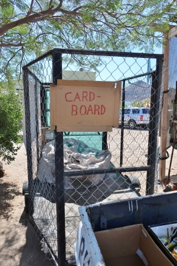 |
The big trailer is used to contain paper products. Cardboard, paperboard, newspapers, magazines, egg cartons and office paper should go into the cardboard trailer. PIZZA BOXES should have food scraped or wiped off the cardboard. Please make sure loose or small items are contained so as not to blow out of the trailer. Please break down all boxes so as to make more room. There is a separate barrel for milk, juice and other Tetra-Pak cartons. Please rinse these and flatten them before placing them in the appropriate barrel. |
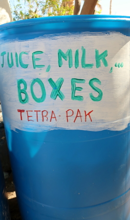 |
| 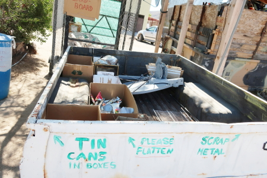 |
The small white trailer will hold scrap metal and tin cans. Paint cans need to be empty. Latex paint can be washed out or cans can be cut in half and old paint pulled separate from the container. Please flatten cans and tins to conserve space. See how to use the can crushers here. There is a separate barrel for aluminum (cans, aluminum scrap metal, clean aluminum foil products like pie plates). The 3 R's in recycling are "Rinse, Rinse, Rinse!" The bees and wasps love soft drinks!! |
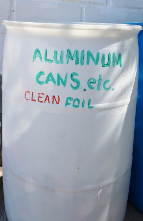 |
| 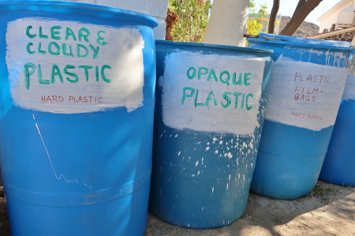 |
All hard plastics, including bottles, containers, buckets (no paint, no metal handles), chairs and toys may be recycled. Plastic only, please. Metal screws, springs, etc. contaminate the mix and can cause damage to the recycling equipment. (Disassemble anything that has metal connectors and place the by-products into the proper areas.) Please place CLEAR (soft drink, water, etc.) and CLOUDY (like milk jugs) containers in the appropriate barrel and place OPAQUE (laundry soap, bleach, etc.) containers in another barrel. Please drain any contents and rinse containers. Again, latex paint can be washed out or cans can be cut in half and old paint pulled separate from the container. We can also recycle plastic film that comes in large sheets or other items like shopping bags and ziplock bags. Please fold and flatten to conserve space and place these in the barrel with the lid so that they will not blow away. |
It cannot be emphasized enough that recyclables must be clean of all food debris before disposal. Pizza boxes should have food scraped or wiped off the cardboard.
Food contamination and cross-contamination of recyclables will lower the value of a bale of product. We want the market for recyclables to grow, so let's be responsible for our waste.
The good news is that we have to separate our recyclables into only plastics, metal and cardboard/paper.
12 volt batteries and the like are accepted (for recycling the lead). Household batteries (AA, AAA, etc.) and cordless tool batteries are not accepted at this time. Please take them back North for recycling.
As to the dump, many items go there to get burned, but often they are just scattered by forces of nature, i.e., wind and rain. Much of this trash is burned with some successful reduction in volume, but a fair amount of it can't or shouldn't be burned. Burning of toilet paper and other paper products is the normal procedure here. It is to be determined if we can do more with construction waste, glass, furnishings and other non-Baja recyclables.
Other alternatives to tossing surplus or less useful items is to donate them or hold garage sales.
Household batteries, wine bottles, styrofoam, canning jars are just some of the items many residents bring with them from other areas with the result of dumping these items here. It should be considered by residents that these items could be returned or recycleded in the areas where they were purchased.
GREEN CONE COMPOSTING
A Green Cone is a "food waste digester" that has been used successfully by individual homes and by
municipalities around the U.S. for decades. We had 2 Green Cones installed at Posada, located in the far SW
and NW corners of the park, near the highway.
We started with the SW cone then added the NW cone, behind the garage buildings. The SW cone blew away in a hurricane, but has been replaced with a blue rollable barrel. We haven't had pigs to eat our garbage this year, unfortuneately. But, for the record, pigs eat most anything, but the items they do not eat - including eggshells, coffee grounds, etc. -- can be put in the Green Cone or other composter. UNFORTUNATELY, NO CITRUS IN THE PIG BUCKETS OR THE CONE. Citrus rinds take too long to decompose, so rinds go into your trash.
The cone has a perforated basket buried beneath it, and the top has a locking tab that it's important to secure after each use to keep critters out and moisture in. (The tab on the NW cone is broken, so we're putting a rock on top of the lid that you should replace whenever you use it.)
To turn food waste into compost, the cone requires "green" matter - your vegetable waste - as well as "brown" matter, like dead leaves, straw and shredded paper. Whenever you add food waste to the cone, add a handful or two of brown waste, which we'll try to keep a supply of next to the cone.
Small things decompose much faster than big things, so it will help speed up the process if you cut up your raw veggie waste as you make it. Keeping a colander in your sink and/or a small, lidded bucket under your sink for ongoing waste collection will streamline the process in your kitchen.
Do NOT put fish carcasses and guts in the cones. Please take these out to sea for disposal.
Between these 2 systems, we have significantly reduced the amount of waste going into the trash bin and over to the dump across the road. Yay!
DO COMPOST THESE ITEMS
-- Fruit & vegetables
-- Coffee grounds, filters, tea bags
-- Egg shells
-- Shredded paper & can labels
-- Paper towels and napkins
-- Straw
-- Wood ash
-- Sawdust
-- Leaves
-- Flowers
DO NOT COMPOST THESE ITEMS as some of these require a different composting technique and attract animals.
-- Bones
-- Meat, poultry & fish
-- Dairy products
-- Grease, cooking oil, or greasy food
-- Avocado pits
-- citrus rinds (limes, oranges, grapefruit)
-- Charcoal ash
-- Diseased plants
-- Weeds with seeds
-- Used Kleenex or toilet tissue
-- Pet feces
PIG FEEDING When pigs are being tended at Posada, there will be locations where food scraps can be placed in buckets. Our guards fed the two pigs we had in 2010 and 2016.
FREQUENTLY ASKED QUESTIONS
Q: Will/should pigs eat:
-- bones?
-- raw fish?
-- tougher vegetable skins like melon, avocado?
-- veggies or leftovers that are clearly rotten -- i.e., with mold on them?
-- dairy products that have turned sour?
A: All of the things mentioned are great pig food, with the exception of raw fish with bones. The only peelings pigs don't like are citrus rinds, and dry corn husks (as in tamale wrappings). Sour milk and moldy stuff is fine. Almost any leftover cooked foods are good, including meat scraps, and of course, peelings, lettuce outer leaves, old bread, etc. I noticed some cooked rice in the digester (Green Cone). That would have been perfect pig food.
Q: Anything else we should not feed the pigs?
A: Pigs will not eat coffee grounds, tea bags, or paper. Please use the Green Cone for these items. Citrus should go into the trash by default.
Q: I heard someone say that pigs typically need a vaccination against trichinosis. One of these pigs is destined for a spring pig roast here at Posada, and people will want to know that it's safe to eat the meat. What do you advise?
A: As to trichinosis concerns, there is nothing to worry about in that regard. Any pork that is cooked well, as in a pig roast, would be perfectly safe. If anyone has ever eaten a pig roast at Ana's (Lupita's) or Serinidad he/she has consumed the same type of local pig meat we will be enjoying. Our pigs are also getting some supplemental grain and cull dates, which is very good.
| 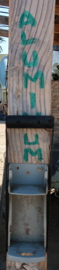 |
The aluminum can crusher is pretty straight forward, just place the ALUMINUM can in the center of the crusher and pull all the way down on the lever. |
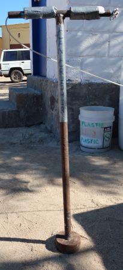 |
The tin can crusher takes only 3 steps. |
|
|
Place the can on its side. 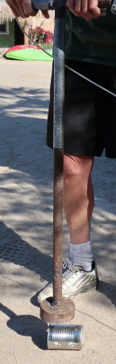 |
Place the crusher over the top two-thirds of the can and smash it. 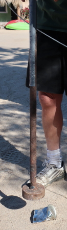 |
Now that the bottom is exposed, smash it. 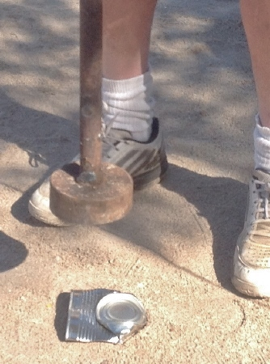 |
If the can has an unopened lid, ding the can in the middle first, then smash the top, then the bottom. 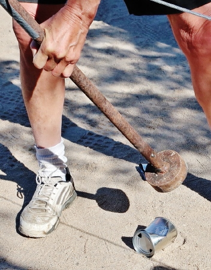 | So easy a child can do it! 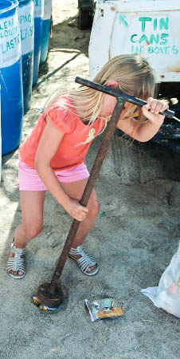 |